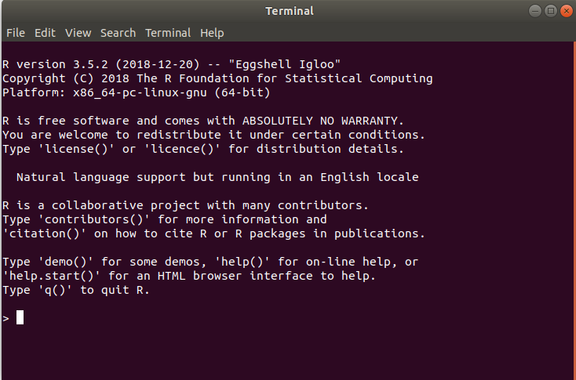
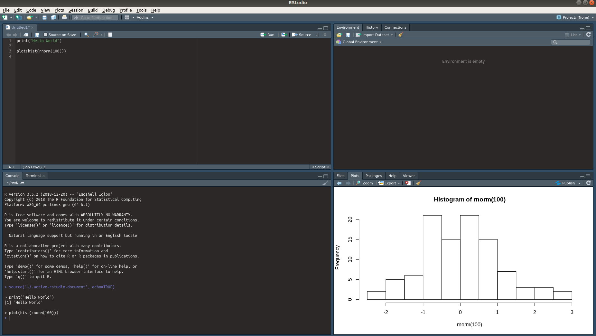
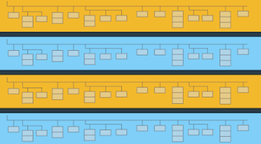

6 Setup
Before we start with the practical guides, it is important to ensure we correctly install and setup the required dependencies.
6.1 R
6.1.1 About R
The R programming language (R Core Team 2018) is a popular and open-source tool for data analysis and statistical computing.
We will use R throughout this paper for the practical examples.

6.1.2 Install R
To install R, head over to https://www.r-project.org/ and follow the instructions.
It will prompt you to choose a CRAN Mirror. This is an archive server that contains the latest R version.
There are instructions to install R on Linux, Mac and Windows.
This will install the base R software, which on its own is just a command line-like interface.

6.1.3 Install RStudio
To get the most out of R we recommend installing the RStudio (“RStudio” 2019) integrated development environment. It is an environment that provides a console with a range of features to enrich the use of R.
To download, visit https://www.rstudio.com/products/rstudio/ and follow the instructions for your system.
The end results should look similar to this:

6.1.4 Install Required R Packages
R has a ecosystem of open source packages that work like add-ins. These packages typically contain specialised functionality that may be required when performing analysis. You can install R packages from the R console and they will be downloaded onto your system and available whenever you use R.
The main R packages we will use in this paper are:
tidyverse - The tidyverse is an opinionated collection of R packages designed for data science. All packages share an underlying design philosophy, grammar, and data structures. (Wickham 2017)
bigrquery - The bigrquery package makes it easy to work with data stored in Google BigQuery by allowing you to query BigQuery tables and retrieve metadata about your projects, data sets, tables, and jobs. (Wickham 2019)
ChannelAttribution - Implements a Markov Model for the Online Multi-Channel Attribution Problem. (Altomare and Loris 2018)
survival - Contains the core survival analysis routines, including definition of Surv objects, Kaplan-Meier and Aalen-Johansen (multi-state) curves, Cox models, and parametric accelerated failure time models. (Therneau 2019)
CausalImpact - Implements a Bayesian approach to causal impact estimation in time series, as described in Brodersen et al. (2015)
To install these packages, and some other supporting packages used in this paper, you can run the command below
install.packages(c("tidyverse", "bigrquery", "ChannelAttribtion", "survival",
"lubridate", "survminer", "DBI", "CausalImpact"))6.2 BigQuery
The first step to more advanced modelling is extracting and cleaning the data. Here we will go through a basic setup and familiarisation guide to get your Analytics data from BigQuery. It is expected that you have some experience using SQL and knowledge of basic database operations.
6.2.1 Setup
If you are an Analytics 360 customer, you can setup BigQuery for use with Google Analytics data. Refer to the Google Help Pages for detailed instructions.
If you don’t yet have Analytics 360, you can still benefit from these practical code examples by using the free Google Analytics Sample Dataset. This is a complete Google Analytics 360 data set from the Google Merchant Store, a real eCommerce platform.
To access the data set follow the instructions provided by Google:
If you’re new to BigQuery, or you don’t have a project set up yet, you’ll need to create a project.
Select this link to go directly to the data set.
Click Query Table to run a query.
In the future you can access the data set within BigQuery by selecting the bigquery-public-data project from the left-hand navigation panel, then select the ga_sessions table under the google_analytics_sample data set.
Please be mindful that using BigQuery can incur a cost. Please refer to Google’s billing and quota information before use.
6.2.2 Export Schema
The way Google Analytics structures its data export into BigQuery is known as the export schema. This schema is able to take advantage of data structures that may be counter-intuitive for users who are familiar with normalised relational databases. BigQuery supports de-normalised tables, where instead of joining lots of flat, normalised tables, you can have one table with nested records.

In the bigquery data set, there is one table per day, defined at the session level that contains all Analytics related data nested within, such as hits and events. Below we will demonstrate some basic queries on this data.
For more information you can refer to the BigQuery Export Schema
6.2.3 Running Queries
6.2.3.1 Hello World
This is a basic query to run that simply sums the page views over a given day. You will note the use of #standardSQL in the header. This lets bigquery know you are using the ‘standard’ SQL flavour over it’s older ‘legacy’ flavour.
/* Hello World Example */
#standardSQL
SELECT SUM(totals.pageviews) as TotalPageviews
FROM `bigquery-public-data.google_analytics_sample.ga_sessions_20170101`| Row | TotalPageviews |
|---|---|
| 1 | 5362 |
6.2.3.2 Using Table Ranges
As the GA Export Schema provides one table per day, to scan across date ranges we need to specify a table range to query.
Notice the * in the FROM clause and the inclusion of _TABLE_SUFFIX.
/* Using Table Ranges */
#standardSQL
SELECT date,
SUM(totals.pageviews) as TotalPageviews
FROM `bigquery-public-data.google_analytics_sample.ga_sessions_*`
WHERE _TABLE_SUFFIX BETWEEN '20170725' AND '20170801'
GROUP BY date
ORDER BY date6.2.3.3 Hit Level Data
Accessing ‘hit’ level data, that is, individual hits within each user’s session requires ‘un-nesting’ the hits data and joining it to the ga_sessions_ table
/* Now at the hit level */
#standardSQL
SELECT fullVisitorId,
visitNumber,
date,
totals.hits,
hits.hitNumber,
hits.type,
hits.time,
hits.page.pagePath
FROM `bigquery-public-data.google_analytics_sample.ga_sessions_20170101`,
UNNEST(hits) as hits
WHERE fullVisitorId = '6170732910727440668' /*Random Visitor Selected*/Now that we are equipped with the basics we can further our understanding in future chapters to extract the data we need for modelling.
6.2.4 Using R with BigQuery
We can also interact with the BigQuery API using the bigrquery package in R.
To set up we load this package, along with the DBI package which helps with database interfacing.
library(bigrquery)
library(DBI)Next we establish a connection to BigQuery. Here you would replace bq_test_project() with the project id you have established in Google Cloud Console.
con <- dbConnect(
bigrquery::bigquery(),
project = "bigquery-public-data",
dataset = "google_analytics_sample",
billing = bq_test_project()
)We can save any SQL queries and forward these for execution as text strings.
sql <- "
/* Using Table Ranges */
#standardSQL
SELECT date,
SUM(totals.pageviews) as TotalPageviews
FROM `bigquery-public-data.google_analytics_sample.ga_sessions_*`
WHERE _TABLE_SUFFIX BETWEEN '20170725' AND '20170801'
GROUP BY date
ORDER BY date
"Here the query is executed and saved as a temp table. The bq_table_download function returns the results to the console.
query <- bq_project_query(x = bq_test_project(), sql)
bq_table_download(query)| date | TotalPageviews |
|---|---|
| 20170725 | 10728 |
| 20170726 | 11200 |
| 20170727 | 10175 |
| 20170728 | 9359 |
| 20170729 | 6293 |
| 20170730 | 7258 |
| 20170731 | 11115 |
| 20170801 | 10939 |
References
R Core Team. 2018. R: A Language and Environment for Statistical Computing. Vienna, Austria: R Foundation for Statistical Computing. https://www.R-project.org/.
Wickham, Hadley. 2017. Tidyverse: Easily Install and Load the ’Tidyverse’. https://CRAN.R-project.org/package=tidyverse.
Wickham, Hadley. 2019. Bigrquery: An Interface to Google’s ’Bigquery’ ’Api’. https://CRAN.R-project.org/package=bigrquery.
Altomare, Davide, and David Loris. 2018. ChannelAttribution: Markov Model for the Online Multi-Channel Attribution Problem. https://CRAN.R-project.org/package=ChannelAttribution.
Therneau, Terry M. 2019. Survival: Survival Analysis. https://CRAN.R-project.org/package=survival.
Brodersen, Kay H., Fabian Gallusser, Jim Koehler, Nicolas Remy, and Steven L. Scott. 2015. “Inferring Causal Impact Using Bayesian Structural Time-Series Models.” Annals of Applied Statistics 9: 247–74.